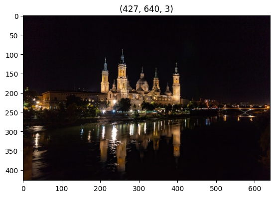
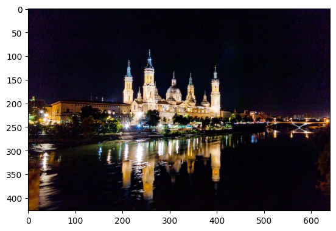

Night Image Enhancement
Imports
We can skip the next cell if neural_de was installed from pip install.
[1]:
import sys
sys.path.append("..")
[2]:
from neural_de.transformations import NightImageEnhancer
import numpy as np
from pathlib import Path
import cv2
import matplotlib.pyplot as plt
%matplotlib inline
Let’s load and display our sample night image :
[3]:
image_path = Path('../examples/images/night.jpg')
image = cv2.imread(str(image_path))
image = cv2.cvtColor(image, cv2.COLOR_BGR2RGB)
plt.imshow(image)
plt.title(image.shape)
[3]:
Text(0.5, 1.0, '(427, 640, 3)')

Usage
[4]:
purifier = NightImageEnhancer()
import time
t1 = time.time()
print(t1)
purified = purifier.transform([image])
print(time.time()-t1)
[01-09 18:18:19] {C:\Users\marc.lacourt\PycharmProjects\neuralde\examples\..\neural_de\utils\_twe_logger.py:123} INFO - Logger: name: neural_de_logger, handlers: [<StreamHandler stdout (DEBUG)>]
WARNING:tensorflow:No training configuration found in save file, so the model was *not* compiled. Compile it manually.
WARNING:tensorflow:No training configuration found in save file, so the model was *not* compiled. Compile it manually.
[01-09 18:20:22] {C:\Users\marc.lacourt\PycharmProjects\neuralde\examples\..\neural_de\transformations\_night_image_enhancer.py:57} INFO - Model https://tfhub.dev/sayakpaul/maxim_s-2_enhancement_fivek/1 loaded
INFO:neural_de_logger:Model https://tfhub.dev/sayakpaul/maxim_s-2_enhancement_fivek/1 loaded
1704820822.98217
[01-09 18:20:23] {C:\Users\marc.lacourt\PycharmProjects\neuralde\examples\..\neural_de\transformations\_night_image_enhancer.py:114} INFO - New image shape detected, readying model for size (448, 640)
INFO:neural_de_logger:New image shape detected, readying model for size (448, 640)
[01-09 18:20:51] {C:\Users\marc.lacourt\PycharmProjects\neuralde\examples\..\neural_de\transformations\_night_image_enhancer.py:117} INFO - Model ready for image size (448, 640)
INFO:neural_de_logger:Model ready for image size (448, 640)
1/1 [==============================] - 61s 61s/step
89.74246406555176
[5]:
plt.imshow(purified[0])
[5]:
<matplotlib.image.AxesImage at 0x2792cc675e0>

[ ]:
[ ]: